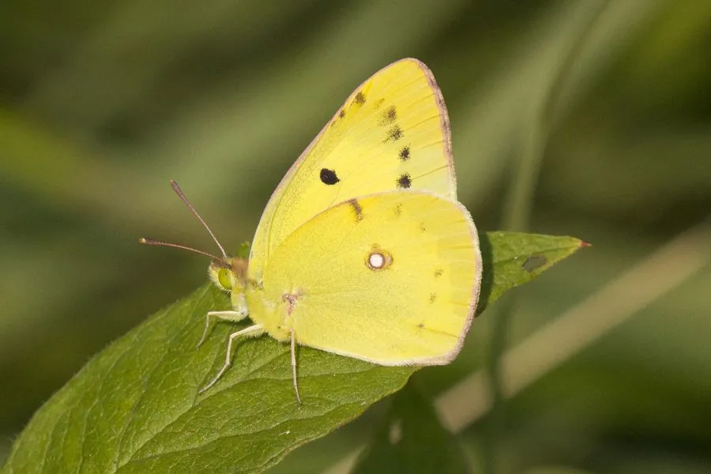

昆虫 · 动物界
斑缘豆粉蝶 Colias erate

翅面黄色或橙色、翅缘黑带中嵌有一列黄斑的豆粉蝶，飞行迅速，一年多代，幼虫取食苜蓿等豆科植物。
- 分类
- 门节肢动物门纲昆虫纲目鳞翅目科粉蝶科属豆粉蝶属
- 栖息环境
- 草原、草甸、田埂、路旁和苜蓿地
- 地理分布
- 欧洲东南部、中亚、西亚、西伯利亚至中国北方、朝鲜半岛和日本
- 保护级别
- 尚无保护级别；为苜蓿地常见昆虫
物种志
斑缘豆粉蝶的翅展约四至五厘米，雄蝶翅面呈鲜黄色至橙黄色，前翅外缘与后翅外缘有宽阔的黑带，黑带中嵌有一列黄色或橙色的斑块，后翅中室端有一个橙色圆斑；雌蝶有黄色和白色两种色型，白色型通体乳白，斑纹与雄蝶相同。它的身体灰黑，密被黄白色绒毛，触角短，呈棒状，末端带红色。
它分布于欧洲东南部、中亚、西亚、西伯利亚，一直到中国北方、朝鲜半岛和日本，在中国常见于华北、西北和东北，栖息在草原、草甸、田埂、路旁和苜蓿地，成虫飞行轻快，喜欢在豆科野花上吸蜜，也常成群在湿地吸水。幼虫以苜蓿、三叶草、野豌豆等豆科植物为食，卵单产于寄主叶片上，幼虫取食叶片，化蛹于茎秆上，一年可发生三至五代，以幼虫或蛹越冬。它是苜蓿地的常见昆虫，尚无保护级别。
形态与习性
- 翅展约四至五厘米，翅面黄至橙色
- 翅缘黑带中嵌一列黄或橙色斑块
- 雌蝶色型有黄色型与白色型两种
- 食性幼虫取食苜蓿、三叶草、野豌豆
- 发生世代一年三至五代，以幼虫或蛹越冬
- 习性飞行轻快，常成群在湿地吸水
趣味知识
- 斑缘豆粉蝶翅缘的黑带里嵌着一串黄斑，像给翅膀镶了道花边。
- 雌蝶有黄、白两种色型，白色型常被误认成别的粉蝶。
- 它飞得又快又急，在苜蓿地里追起来很费劲。